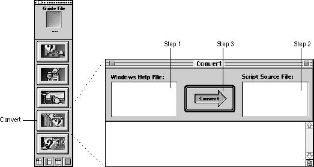
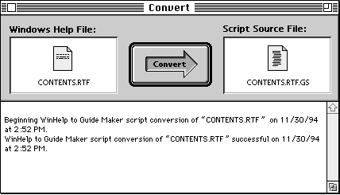
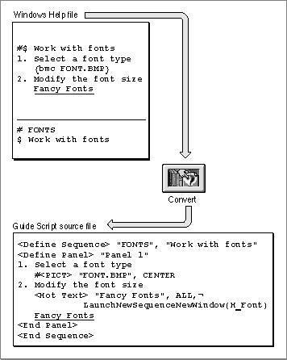

Converting Your Windows Help Files in Three Steps
Converting a Windows Help file to a Guide Script source file is a three-step process using Guide Maker's Convert utility. Figure 8-1 illustrates the Convert window (Guide Maker's converting interface). Note that the steps in the illustration refer to the three steps of the conversion process.Figure 8-1 Converting your Windows Help files using Guide Maker's Convert utility

To convert your Windows Help files, follow these three steps:
Figure 8-2 A successfully converted Windows Help file
- Select the Windows Help file to convert.
To select the Windows Help file, click in the Windows Help File area of the Convert window (see Figure 8-1); a standard file dialog box appears, requesting that you select the Windows Help file to convert. Select the file you want to convert.
- Select a name for the converted source file.
To name the converted source file, click in the Script Source File area of the Convert window (see Figure 8-1); a dialog box appears, requesting that you name the converted file. Typically, you give the converted source file the name of your Windows Help file and end the name in
.GS(for Guide Script).- Click the Convert arrow.
Guide Maker begins to convert your Windows Help file, reporting status and error messages in the status area of the Convert window. Figure 8-2 shows the messages reported by Guide Maker after a successful conversion.

Congratulations! By following the conversion steps, you have converted a Windows Help file into a Guide Script source file. To convert all of your Windows Help files, repeat these three steps.
Figure 8-3 illustrates a sample Windows Help file and its converted Guide Script source file. Note that the hot text--Fancy Fonts--has been successfully converted; Guide Maker converts automatically all references to hot text and hot objects.
Figure 8-3 A Windows Help file and its converted Guide Script source file

When all of your Windows Help files are converted to Guide Script source files, you need to create an interface for your help content; see the next section for more information on this topic.